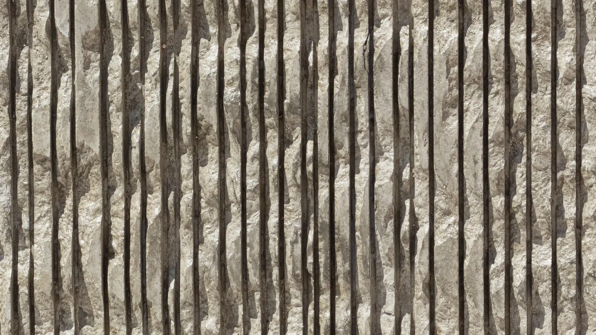

Surfaces Designed as Architectural Materials.
Explore MarmoFiber finishes across Marmo Vetrine, Marmo Terra, Rough, Special Patterns and Special Design Features.
01 — Five Collections
Five families. One material logic.
Each collection is a distinct architectural identity rather than a colour chart. Choose the family that matches the building's character, then narrow to the finish that behaves the way the elevation or the interior needs it to.
Marmo Vetrine
Open-pored, vein-cut surfaces with the linear movement of cut travertine, in nine tones from nude through to black.
Marmo Terra
Terrazzo-character surfaces: graded mineral chips set in a pale matrix and opened up by grinding.
Rough
The open textural family — a coarse broken grain in the rough finish, closer and shallower in the flamed.
Special Patterns
Relief surfaces with their own geometry: Linea fluting, the Carro grid, Marmo Vein ribbing and Marmo Stria coursing.
Special Design Features
Moulded architectural profiles — corniches, string courses and opening frames carried out in the same material.
02 — Finishes
Sixty-four finishes.
64 finishes
Finish images are photographed samples and are shown for visual reference. Colour, tone and texture vary between batches and under different lighting. Always confirm a selection from a current physical sample.
Material Sampling
See it. Touch it. Specify it.
Request a MarmoFiber sample and experience the finish, texture, tonal depth, and material character before making your project selection.